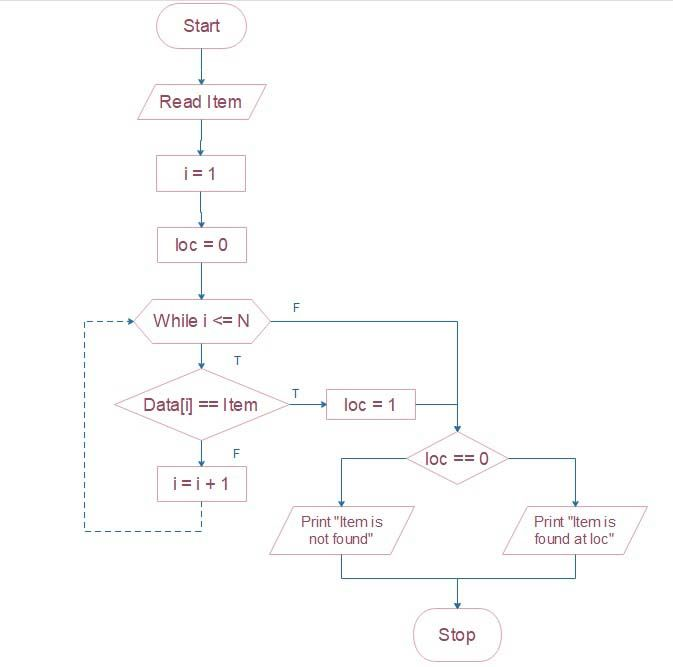

Let's learn about algorithm issues
In mathematics and computer science, an algorithm is a sequence of mathematical instructions, typically used to solve specific problems.
Algorithms are created to allow users to tell a computer how to solve a problem.
They can be drawn as flowcharts/diagrams.
Designed to retrieve information stored within some data structure, E.g.
Looks through a dataset in halves until desired 'value' is found or not, quite efficient as data is 'cut down' fast and is often easy/easier to implement than other algorithms.
Looks through a dataset in order until desired 'value' is found or not.
They rearrange the elements of a dataset in a specified order, like quicksort and mergesort, which are efficient for sorting large datasets. E.g.
Compares to values at a time, swapping the values based on size, larger values often 'float to one end' of the list.
An expansion upon bubble sort, upon very swap, 'back swaps' are taken to place the value in the correct position at the start of the list, this prevents repeats of entire lists due to one value often at the end being left for the next pass.
Go direct
These deal with graphs, which are mathematical structures used to represent pairwise relations between objects.
The model is usually built from data about past decisions and some of the factors used to make them. The algorithm can then automate decision-making, so large amounts of data can be processed efficiently in a short period of time. Machine learning algorithms will improve their models as they process more and more data. It is in this data used to build and train algorithms that many of the problems lie.
First, algorithms typically need relatively large data sets to work well. (Using decision based models as an example) So, for example, A-levels could be graded and evaluated by algorithms. However,a key issue is that data about the past doesn’t necessarily help you make adequate decisions about the present or the future. It blocks any chances of change and development – like when a school improves its teaching or one year group of students performs better than their peers in previous years.
This puts a high amount of pressure and power upon this algorithm; in theory, anyone in control of it or its data could change this, and therefore dictate who gets what. Furthermore, all data holds biases that an algorithm can end up replicating. For example, the A-level algorithm adjusted results to try to replicate the previous overall achievements of different ethnic groups, which are likely to reflect racial inequality.
Algorithmic bias is the phenomenon by which an algorithm may perform particularly poorly on a population subgroup if it was not exposed to that subgroup's data during algorithm development and training. Concerns have also been raised about how AI and machine learning may be exacerbating healthcare inequalities by underperforming in marginalised patient groups posing new risks for medical science being developed as well as future treatment effectiveness.
Algorithms are often elegant and incredibly useful tools used to accomplish tasks. They are mostly invisible aids, augmenting human lives in increasingly incredible ways. However, sometimes the application of algorithms created with good intentions leads to unintended consequences.
The British pound dropped 6.1% in value in seconds on Oct. 7, 2016, partly because of currency trades triggered by algorithms.
Microsoft engineers created a Twitter bot named “Tay” this past spring in an attempt to chat with Millennials by responding to their prompts, but within hours it was spouting racist, sexist, Holocaust-denying tweets.
Cathy O’Neil, author of Weapons of Math Destruction: How Big Data Increases Inequality and Threatens Democracy, pointed out that predictive analytics based on algorithms tend to punish the poor, using algorithmic hiring practices as an example.
Well-intentioned algorithms can be sabotaged by bad actors. An internet slowdown swept the East Coast of the U.S. on Oct. 21, 2016, after hackers bombarded Dyn DNS, an internet traffic handler, with information that overloaded its circuits, ushering in a new era of internet attacks powered by internet-connected devices.